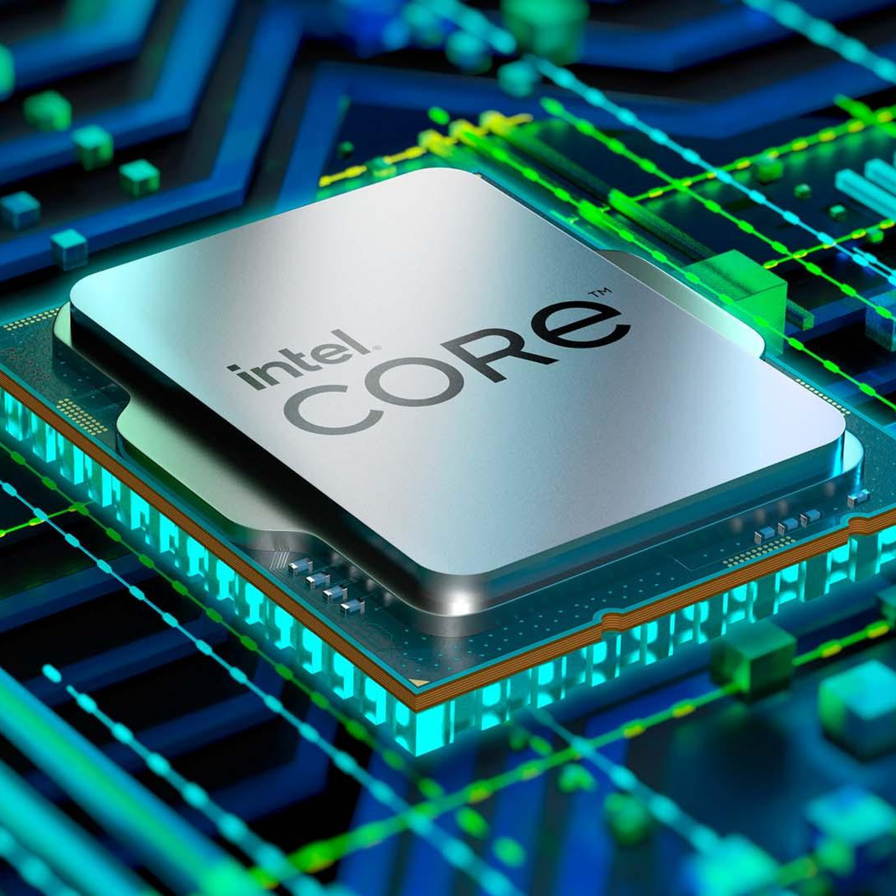

De CPU, of Central Processing Unit, is het hart en de hersenen van een computer. Stel je voor dat je computer een team is dat samenwerkt om taken uit te voeren, zoals het openen van programma's, surfen op het web, of het spelen van videogames. De CPU is de slimme leider van dat team, die alle beslissingen neemt en het werk coördineert. Hier zijn enkele belangrijke dingen die de CPU doet: Rekenen: De CPU is als een razendsnelle rekenmachine. Het kan allerlei soorten wiskundige en logische berekeningen uitvoeren. Dit omvat eenvoudige taken zoals optellen en aftrekken, maar ook complexe taken zoals het oplossen van ingewikkelde wiskundige problemen. Instructies uitvoeren: Programma's op je computer, zoals tekstverwerkers, webbrowsers en videogames, bestaan uit een reeks instructies die de CPU moet uitvoeren. De CPU haalt deze instructies op uit het geheugen en voert ze in de juiste volgorde uit. Dit is hoe het programma werkt zoals jij wilt. Beslissingen nemen: De CPU neemt voortdurend beslissingen. Het bepaalt welk deel van het geheugen moet worden gelezen, welke berekeningen moeten worden uitgevoerd en welke gegevens naar andere onderdelen van de computer moeten worden gestuurd. Deze beslissingen worden genomen op basis van de instructies in programma's en de gegevens die worden verwerkt. Beheer van bronnen: De CPU beheert de toegang tot computerbronnen zoals RAM (het werkgeheugen), harde schijven, en randapparatuur zoals toetsenborden en muizen. Het zorgt ervoor dat alles soepel verloopt en dat elk onderdeel van de computer zijn taken op het juiste moment kan uitvoeren. Kloksnelheid: De CPU heeft een kloksnelheid, uitgedrukt in gigahertz (GHz), die aangeeft hoe snel hij instructies kan verwerken. Hoe hoger de kloksnelheid, hoe sneller de CPU taken kan uitvoeren. Moderne CPU's hebben vaak meerdere kernen, wat betekent dat ze meerdere taken tegelijk kunnen afhandelen. Kortom, de CPU is de "denker" van de computer. Het neemt instructies in, voert berekeningen uit, maakt beslissingen en zorgt ervoor dat je computer doet wat jij wilt. Zonder een CPU zou je computer gewoon een doos met onderdelen zijn, zonder enige intelligentie om taken uit te voeren. Het is een cruciaal onderdeel van elke computer, of het nu een desktop, laptop, smartphone, of ander apparaat is.
